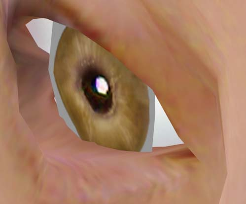
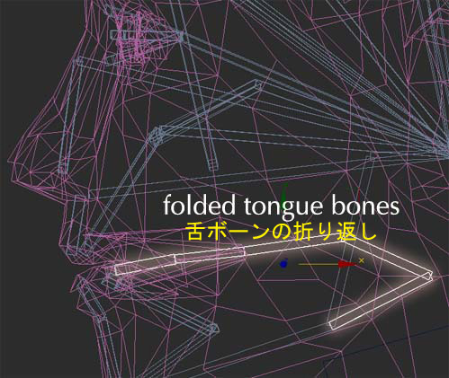
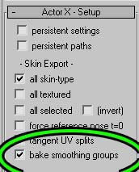
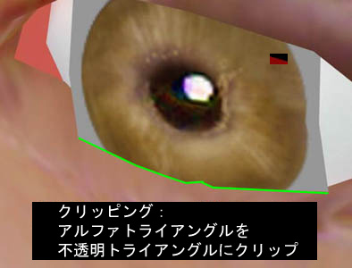
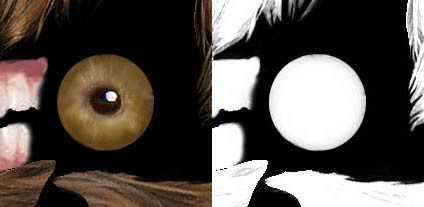
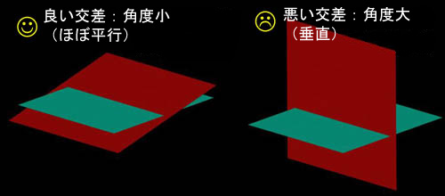

UDN
Search public documentation:
UnrealModelingJP
English Translation
한국어
Interested in the Unreal Engine?
Visit the Unreal Technology site.
Looking for jobs and company info?
Check out the Epic games site.
Questions about support via UDN?
Contact the UDN Staff
한국어
Interested in the Unreal Engine?
Visit the Unreal Technology site.
Looking for jobs and company info?
Check out the Epic games site.
Questions about support via UDN?
Contact the UDN Staff
Unrealモデリング ガイド
ドキュメントの概要：ここでは、Unrealのモデリングにふさわしいいくつかのデザイン例、さらにレベルやキャラクターに使うポリゴン数の推奨値をご紹介します。Unreal Engineで初めてモデリングを行う方を対象としています。 ドキュメントの変更ログ：最終更新者Michiel Hendriksにより細部変更。前回修正者Tom Lin (DemiurgeStudios?)により概要文の変更。原文作成者はTom Lin (DemiurgeStudios?)。Unreal Engineでモデルを作る
Unreal Engineのモデリング手順の流れは、他の一般的モデリングとほぼ同じです。そこで、Unreal Engine特有の機能の他、ゲーム固有のモデリング事情についてもご紹介します。アニメーションのあるプレーヤモデルについて特に詳しくご説明します。モデルの設計プラン
モデリングの最も初歩的な部分でありながら、限りなく重要なのがこの設計プランです。モデリングの第一歩はこれから作るモデルの持つ動作能力を決定することで、その動作を軸にモデルを作成します。例えば、モデルが「登る・持ち上げる・投げる」といった動作を頻繁に行う場合、モデルの滑らかな動きを実現するためにモデルの肩付近により多くのポリゴンを設定することになります。また、三人称視点カメラをキャラクターの後ろに配置することが多いなら、モデルの顔部分に集中してポリゴンを使うのではなく、後姿に多くのポリゴンを使うようにします。また、ユーザが最もよく見るモデルの部位はどこなのか検討します。例えば、FPS（一人称シューティング）では全体的にキャラクターの動作が速く、距離もあります。この場合、アップになったり静止したりすることはほとんど無いため、顔に多くのポリゴンを費やす必要はありません。むしろ、ポリゴンを均一に広げた方が良いのです。 もちろん、キャラクター以外のモデルについても同様です。例えば車なら、ドアの開閉、窓から中が見えること、さらには車がひっくり返ることなどの必要性を検討します。各部の重要性を検討し、それに応じて適当なポリゴン数で作成します。スムースメッシュ
Unreal Engineでは通常、スムーススキンを貼り付けたメッシュでキャラクターモデルを作成します。つまりモデルは、複数ピースの集まりではなく一体もののサーフェスで出来ています。このため、複数パーツの集合体であるモデルとは違い、骨格構造に基づいてモデルが変形するようになります。このシームレスな外観が特にふさわしいのは肘、膝、そして指などの関節部で、これらはスムーススキンでないとモデルの継ぎ目を「滑らかに」する手段がテクスチャに無くて困ることが多いものです。モデルの影もスムーススキン モデルの方が理にかなった動きをします。 サイボーグ、ロボット、そしてカナダ人など、関節が硬くスムース変形を必要としないキャラクターの場合は、完全にスムーススキン化せずにモデルを作成することもあります。防弾チョッキを着たSWATのチームメンバーを例に考えてみましょう。肩関節をスムーススキンから切り離すと、動画時に出来てしまう肩のシワが緩和されるという利点もあります。 しかし、ほとんどの場合はスムーススキンで処理するのが最もよいでしょう。特殊関節
飛んだり跳ねたりするだけのビデオゲームで満足する時代はもう終わりを告げようとしています。瞬き、視線、舌の動き、身振り手振りなどは、新たなモデルに着手するにあたって必ず検討すべき項目です。こういった動作がモデルの可能性をグッと広げますが、犠牲も伴います。アルファチャンネルを使ったテクスチャ、多ポリゴン、複雑なリギングや活発な動作の追加などが、落とし穴となってしまう場合もあるのです。 こうした属性の作成に役立つヒントをいくつかご紹介します。動く目
この手順では、アニメーションメッシュでアルファチャンネルを利用します。 モデルの眼は、眼球を模したテクスチャを貼った球体を眼球孔に配置するのが唯一最善の方法だという人もいるかもしれません。しかし、アルファチャンネルやマスクをテクスチャに適用すれば、もっと効果的な手法が使えます。眼球を作ってしまうのではなく、眼を白目と虹彩の二つの部位として分割して考えるのです。白目をスムーススキン化した顔の一部（固定要素）として作成し、虹彩を一枚のポリゴン上にフロートさせると、「眼球」のサーフェスに沿って虹彩のみを動かすことが出来ます。これは眼球に便利なシミュレーションでUT2003およびUT2004でも使われています。
まぶた
まぶたには、キャラクタースタジオにデフォルトにない顔の骨格構造が必要です。 まぶたはスムーススキンによってある程度模造できます。まぶたの簡単な作り方は、上下に単純回転する頂点列に単一ボーンをバインドし、そのままポリゴンシートを張った目の上でスキンをドラッグするというものです。モデリングの観点から言えば、安全にストレッチできる頂点列を利用すれば、あまりにもたくさんの顔ジオメトリを編集せずに済むのだと覚えておいてください。
舌
舌には、キャラクタースタジオにデフォルトにない顔の骨格構造が必要です。 舌は、動きの必要度にはよりますが、ほとんど説明の必要はないでしょう。もしも、舌を誰かに向かって突き出す、唇をなめる、などのように口から舌をかなり出す場合は、少し変則的な骨格構造を用いる必要があります。Unrealでは、ボーンを時間の経過に伴い伸張させる機能をサポート*していません*。ボーンの情報は方向と位置のみとなっています。舌の動作に最も良い方法は、ボーンを折り返す方法でしょう。既存のボーンを伸張するのは不可能なので、アコーディオンのように折ったり展開したりします。
モデリング上の観点から言えば、通常の舌ならこの処理で十分です。舌は口のかなり奥に置かれるため、外へと伸ばし出してもほとんどの部分はずっと口の中にあるということを覚えておいてください。 +++ 参照ポーズ（Refpose） Unreal Engineのモデリングで常に意識すべき重要なコンセプトの一つに、参照ポーズ（Refpose）とアニメーションの区別があります。拡張子「.PSK」のファイルに出力される参照ポーズ（Refpose）にはモデルとボーンの情報がありますが、アニメーション情報はありません。ここはボーンの効果を設定する場所で、エンベロープやロックによってグループ化された頂点にボーンが及ぼす作用を設定します。一方、アニメーション情報は拡張子「.PSA」のファイルに格納されますが、骨格構造の動きに関する情報のみで、ウェイトの情報はありません。というのも、参照ポーズ（Refpose）とは基本的に、モデリングをすすめるにあたってリギングを簡単かつ快適に行えるようなスタンスに設定したキャラクターなのです。 ActorXはこれらのファイルを生成するプラグインですが、詳細説明については「ActorXMax Tutorial（ActorXMaxチュートリアル）」もしくは「ActorXMaya Tutorial（ActorXMayaチュートリアル）」をご覧ください。 腕を両サイドへピンと伸ばし、足を外に開いて立つスタンダードな参照ポーズ（Refpose）のキャラクターを使ってモデリングを始める方が多いと思います。筆者は最近、腕の角度を45度にしたキャラクターからモデリングを始めるようになりました。腕は少なくとも半分は下ろした状態なので、モデルが腕を休ませた状態の見栄えは、（姿勢としては非常に不自然な）ピンと伸ばした状態よりもかえって重要なのです。リギングのシェーディングは重たくなってしまいますが、肩の変形が少なくなるので試してみてください。 +++ スムージング グループ
スムージング グループによってスムージングした静的メッシュなら、快適に操作できます。まさしくスムースです。
骨格（キャラクター）モデルにスムージングは 正式には サポートされていませんが、モデルを読み込むとスムージンググループごとに階層分割され、スムージンググループ機能が有効となります。一体どういうことでしょうか。これはActorXが、スムースエッジに沿って頂点を分割した分割ピースごとのスムージングにより、スムージング処理を代行しているということです。つまり擬似スムージングですが、実行後モデルのスムースエッジ上に存在する頂点数は倍増してしまいます。分割頂点ごとにメモリ占有量やレンダリング負荷がどんどん積み上がってしまうので、骨格モデルをグループ分割することはお奨めしません。
それでもこのスムージング処理を行いたいという場合は、ActorXパネルで[bake smoothing group]（スムージンググループのベイク）のボックスをチェックしてください。
+++ スムージング グループ
スムージング グループによってスムージングした静的メッシュなら、快適に操作できます。まさしくスムースです。
骨格（キャラクター）モデルにスムージングは 正式には サポートされていませんが、モデルを読み込むとスムージンググループごとに階層分割され、スムージンググループ機能が有効となります。一体どういうことでしょうか。これはActorXが、スムースエッジに沿って頂点を分割した分割ピースごとのスムージングにより、スムージング処理を代行しているということです。つまり擬似スムージングですが、実行後モデルのスムースエッジ上に存在する頂点数は倍増してしまいます。分割頂点ごとにメモリ占有量やレンダリング負荷がどんどん積み上がってしまうので、骨格モデルをグループ分割することはお奨めしません。
それでもこのスムージング処理を行いたいという場合は、ActorXパネルで[bake smoothing group]（スムージンググループのベイク）のボックスをチェックしてください。

+++ ゲーム内のパースペクティブ 広範囲に稼動するカメラは、ゲーム用モデリング特有の機能です。しかし、これがアーティスト泣かせとなる場合もあります。カメラが様々な距離や視点からモデルを捕らえるので、うまく作ったはずのモデルも変形して台無しになってしまうことがあります。例えば、モデルが足元をまっすぐ見下ろすと、脚は床に向かって徐々に細くなり、足がとても小さく見えます。一方、同じモデルを50ヤード離れた所から見てみると、今度はバランスよく見えます。この作用に対し、カメラが足元に近づくにつれて脚の幅を少しずつ均等に広げてゆきたい人もいるでしょう。実例をご覧になりたい場合は「UnrealDemoModels（Unrealデモモデル?）」をご覧ください。 ここでは必ず守るべき規則などはありません。モデルの描画状態をよく検証して、適切な処理を判断しましょう。 もう一つ覚えておきたい事項は、見かけのモデルサイズです。多くの場合、スクリーン上のキャラクターに利用するピクセル数はテクスチャマップよりも少なくなります。複数モデルを作成する場合は、離れていてもどのモデルか区別がつくように、しっかり特徴づけるよう心がけます。 当然ながら、UT2003のように複数プレーヤやチームでプレイするゲームでは特に重要になります。 +++ Unreal Engineのヒント 作業を快適にし、モデルを格好よくする、とっておきのヒントをいくつかご紹介します。クリッピング ポリゴン
互いに直接クリップさせたスムーススキン モデルのポリゴンは見栄えが悪くなりやすいのですが、スムースエリアとの継ぎ目を隠すディテールを後で追加する場合、クリッピング ポリゴンはいたずらにトライアングルを増やさずに済むよい手法です。シート上に眼（虹彩）を作成する前述のヒントと、このクリッピング ポリゴンを併用すればより効果的です。クリッピング ポリゴンは[UnrealEd]で完璧に作動します。
眼を見ると、眼球の虹彩部分はほぼ正方形のポリゴンシート上にあるように見えます。テクスチャのアルファチャンネルには、Unrealで虹彩が円形にみえるようにする透明度の情報が入っています。
一つだけクリッピング トライアングルが問題になるケースがありますが、それは二つのトライアングルに割り当てたマテリアルがテクスチャのアルファチャンネルを使用する場合です。これは同でもよい問題ではなく、何かが損傷していることは明らかです。 眼に関しては、虹彩だけがアルファ情報を持つので順調に機能します。クリップ先（周辺の眼ソケット）がアルファチャンネルを使用しないので、描画優先順位がバッティングしないのです。従って、モデルプランニングの初期段階ではモデルのどこでアルファを利用するのかを識別し、二つのアルファ トライアングルが交差しないことを確認することが大切です。万一、交差の可能性がある場合（例えば毛髪など）は、フェース同士が限りなく平行に近くなるように徹底的に角度を落とし、トライアングルが接触する角度を可能な限り最小化します。この角度が垂直となるのは最悪のケースです。
片面ポリゴン
[UnrealEd]で両面テクスチャを有効にする代わりに、片面ポリゴンを利用すると時間短縮の有効な手段となります。モデリング上の追加作業は何もなく、単にモデルの裏面をオープンにしておくだけです。旗などの物体に適しています。 ここでも、目が良い実例になります。フロートする虹彩は片面ポリゴンシートです。穴
スムースキン メッシュ作成用のサーフェスは、完全に閉じている必要がありません。ポリゴン数を抑えたいエリアでは、場合によりあえて不完全なメッシュにしておくこともできます。もちろん、何かの拍子にサーフェスのギャップがカメラの真正面にならないかは確認しておきましょう。また、サーフェスに空けられた穴もそのままにしておいて、モデルの後ろをブロックするようにポリゴンを配置して穴を「埋める」方法もあります。 繰り返しますが、眼はこの技法の優れた実例です。ピンクの部分は実は大きなトライアングルで、頭の中のかなり後方に配置してあります。これによって、白で埋めなければならないギャップが顔にないか確認する必要がなくなります。
繰り返しますが、眼はこの技法の優れた実例です。ピンクの部分は実は大きなトライアングルで、頭の中のかなり後方に配置してあります。これによって、白で埋めなければならないギャップが顔にないか確認する必要がなくなります。
 +++ ディテールレベルの比較
ディテールのレベルについては、プロの処理方法を参考にしましょう。このセクションではUT2003、Unreal IIおよびオリジナル版Unreal Tournamentのポリゴン数を比較します。このデータを読むにあたり、ポリゴンの概数がそのまま実際のレベル稼動速度を示すものではないこと、各トライアングルに施した効果の影響も大きいことを留意しておいてください。
+++ ディテールレベルの比較
ディテールのレベルについては、プロの処理方法を参考にしましょう。このセクションではUT2003、Unreal IIおよびオリジナル版Unreal Tournamentのポリゴン数を比較します。このデータを読むにあたり、ポリゴンの概数がそのまま実際のレベル稼動速度を示すものではないこと、各トライアングルに施した効果の影響も大きいことを留意しておいてください。